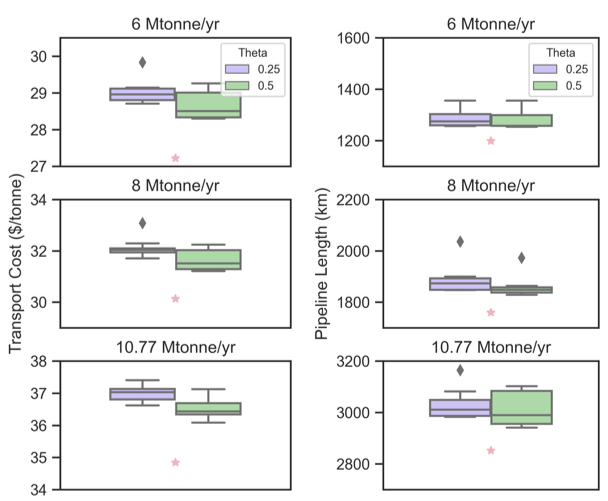
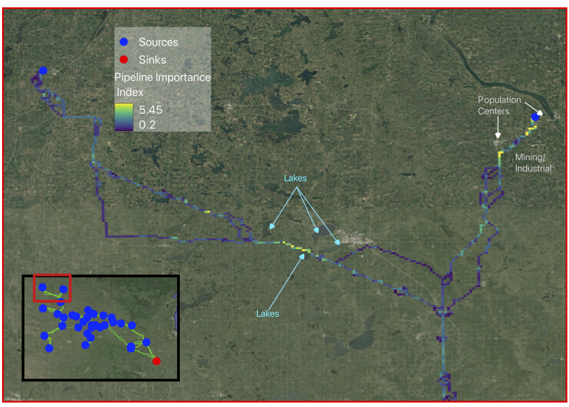
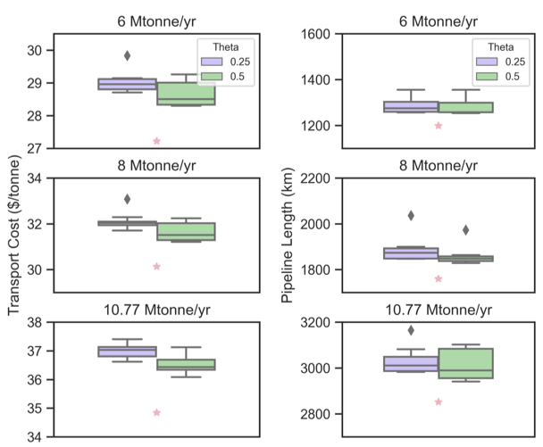
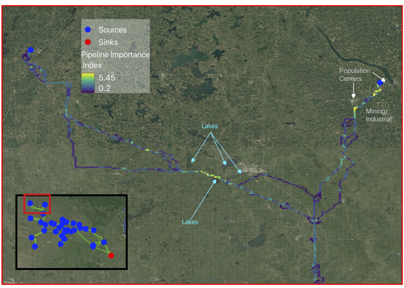

k-Shortest Paths for Pipeline Routing
At Carbon Solutions, the framework we rely on for pipeline routing produces the optimal pipeline route based on the underlying routing surface. However, we only have data that describes some of the on-the-ground conditions and can miss really important details like whether a land-owner is interested in leasing out his land or if there’s a cemetery we don’t want to route through. As a way of providing routing options beyond a single ‘optimal’ solution, I implemented an algorithm to give multiple solutions that can then be analyzed for routing chokepoints or using a cost-benefit framework.
The algorithm for generating the k-shortest routes is pretty simple. Called Yen’s algorithm, it eliminates nodes one-by-one and re-runs Dijkstra’s algorithm between each iteration until it eventually comes up with an exact solution for the k-shortest paths. However, this ends up being extremely time-intensive and paths often differ by only a single node. What we actually want is to introduce a limited overlap parameter into our algorithm. Think about routing in google maps. I don’t want to see two routes that only differ by one or two blocks when I’m driving. A real decision goes something like “do I take the absolute fastest route, or do I want to take the scenic route that is 10 minutes slower”. The variety of options presented is sometimes more important than the exactness of the solution. The problem can be described by k-shortest paths with limited overlap or kSPwLO algorithms.
We utilize the ESX algorithm for kSPwLO which is a modification of Yen’s algorithm that introduces a limited overlap parameter and an priority queue to produce approximate solutions much more quickly. The prioritizaiton queue is essentially a set of heuristics for eliminating nodes. Here is an example pipeline routes produced using the ESX algorithm for different values of k and values of theta (the overlap factor).
You can immediately see the variety of routes that are produced by the algorithm. And many of the routes in magenta find similar length pathways that deviate large distances from the optimal route. We can also see that the algorithm is able to find multiple pathways through the city at the southern end of the route. This optionality allows us to analyze a variety of routes through a cost benefit analysis, identify chokepoints, and provide more options to stakeholders.
We also assessed how using the algorithm might impact the cost of a project or the implementation of the projects. The figure below shows the results of running our optimization software, SimCCSPRO, on the routes produced by the kSPwLO algorithm. We run the algorithm ten times using the same sources and sinks but with randomly selecting pipeline routes from the kSPwLO output for k=10. The blue pie charts represent how frequently a particular source deploys at different CO2 capture volumes.
The figure shows a large vareity of pipeline routes that deviate significantly from the optimal route, expecially near the sink toward the Southeast. Next, we compared the project costs for each of these iterations. The figure below shows the projects transportation costs which are consistently about 5-7% higher than the optimal. The case study shows that the kSPwLO algorithm can produce a variety of routes that spatially deviate significantly from the optimal route but still have similar project costs.
Further, we developed a Pipeline Importance Index to analyze the chokepoints along the routes and determine which reaches of pipeline might be most important to a project from a developement perspective. The metric is based on the number of routes that pass through a given reach of pipeline and the routing how high up a node might be in the priority qeueu. If a node is high in the priority but also remains in many routes, we can determine that that in node is important to the project and might be a chokepoint that we want to analyze further. The image below shows the importance metric for a set of pipeline routes in Iowa.
I discuss the project in more detail in the video below...
 


